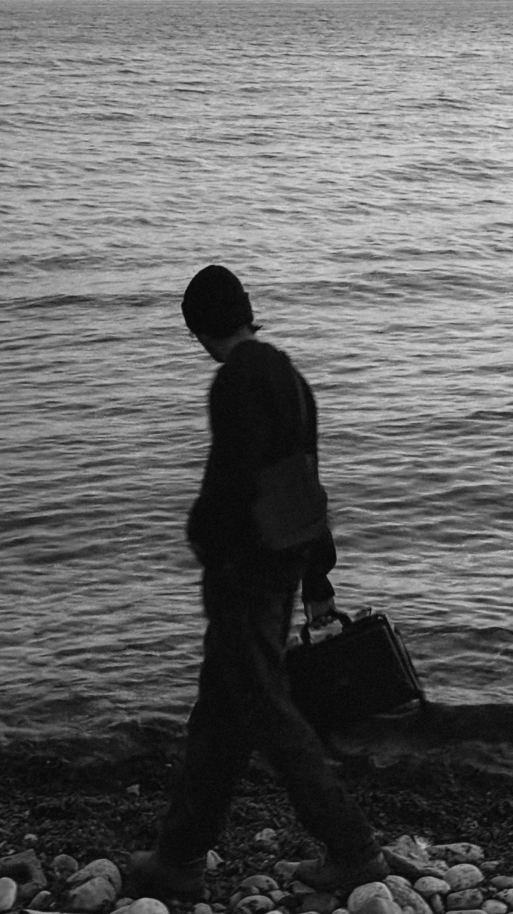

I walk where echoes lose their breath,
where winter melts in quiet death.
The snow still lingers, laced with time,
yet beneath it, the grass hums a soft and distant rhyme.
The sky above, vast and undone,
holds the fading glow of a weary moon and a dying sun.
The winds murmur secrets in hushed tones,
a melody woven from lost whispers
and the ghosts of passing seasons.
The earth beneath my feet fades,
caught between the hush of winter’s grasp
and the quiet promise of spring.
Yet, I keep moving, drawn beyond the solemn stillness,
past the parting snow, toward something unseen.
Beyond the hill, beyond the frost’s embrace,
a softer light waits,
where the cold no longer clings,
and the silence finally sings.